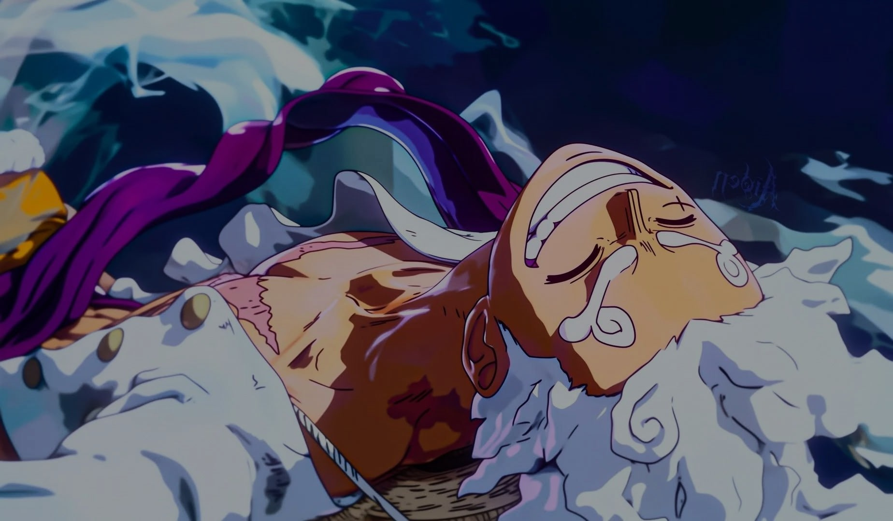
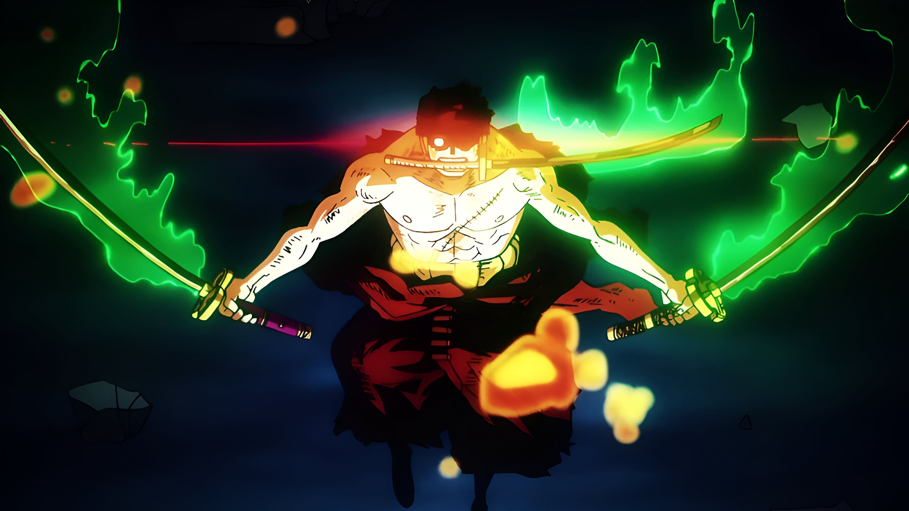
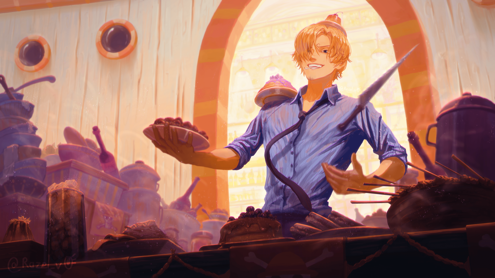
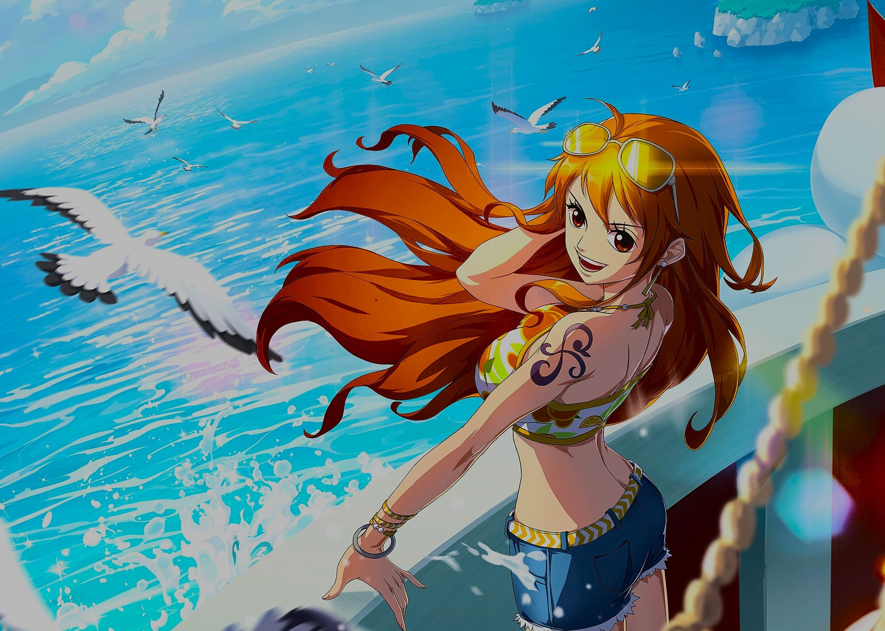
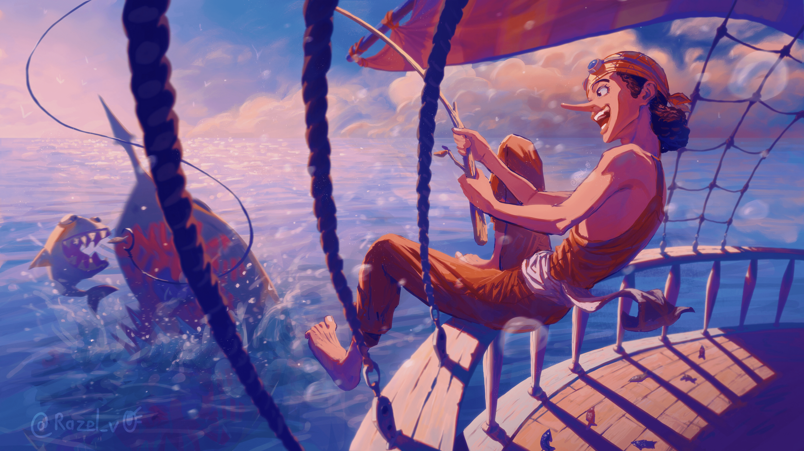
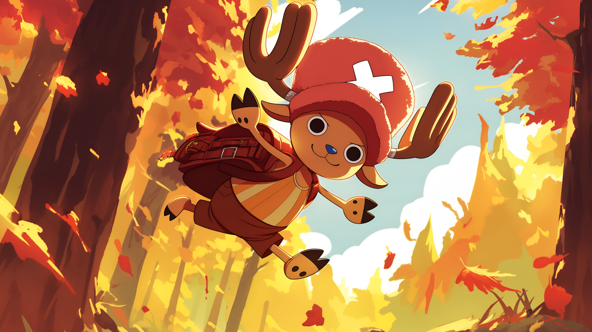
 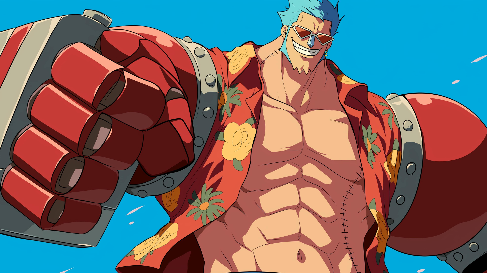
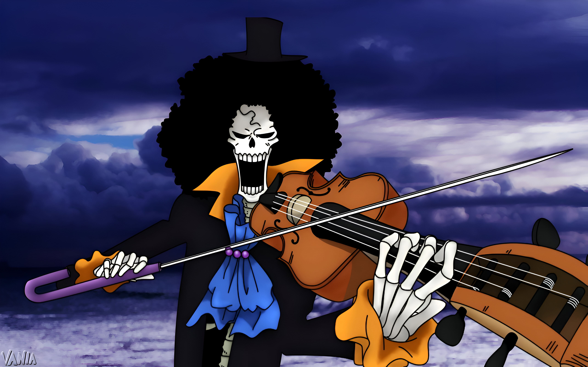
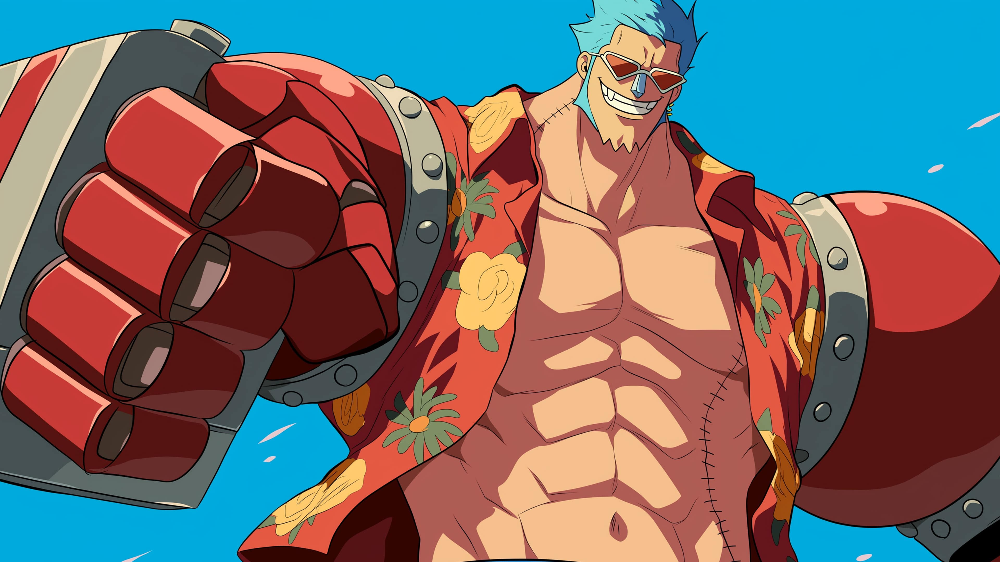
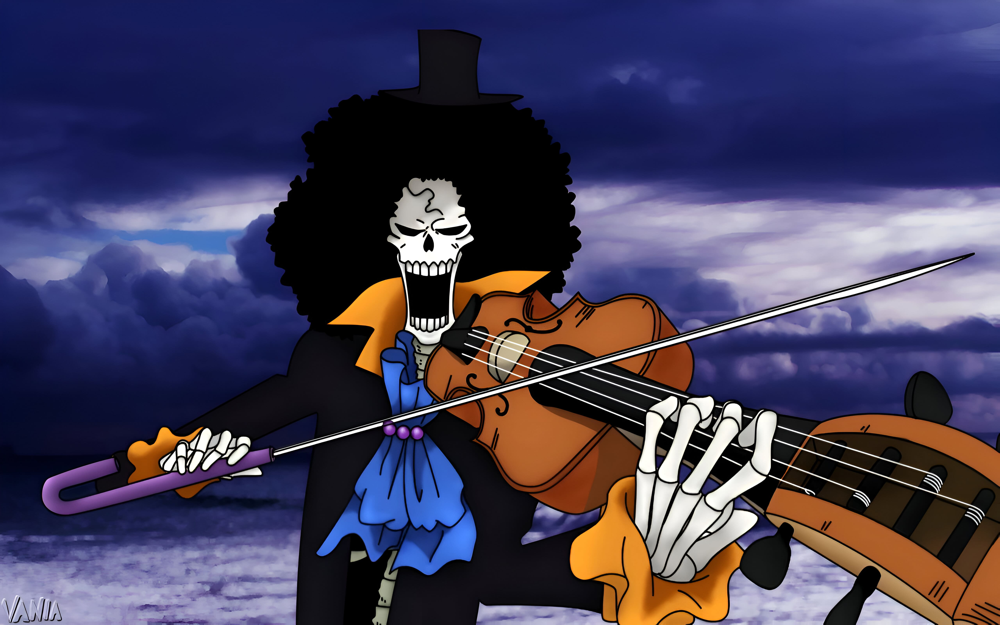

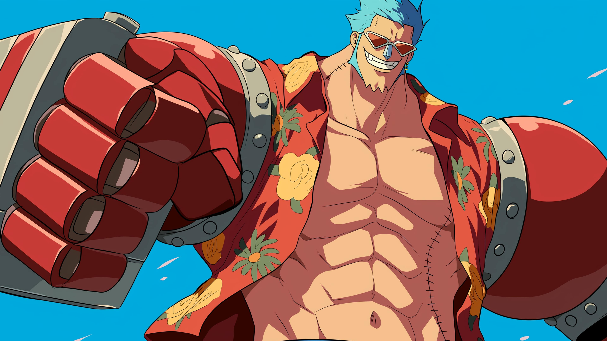
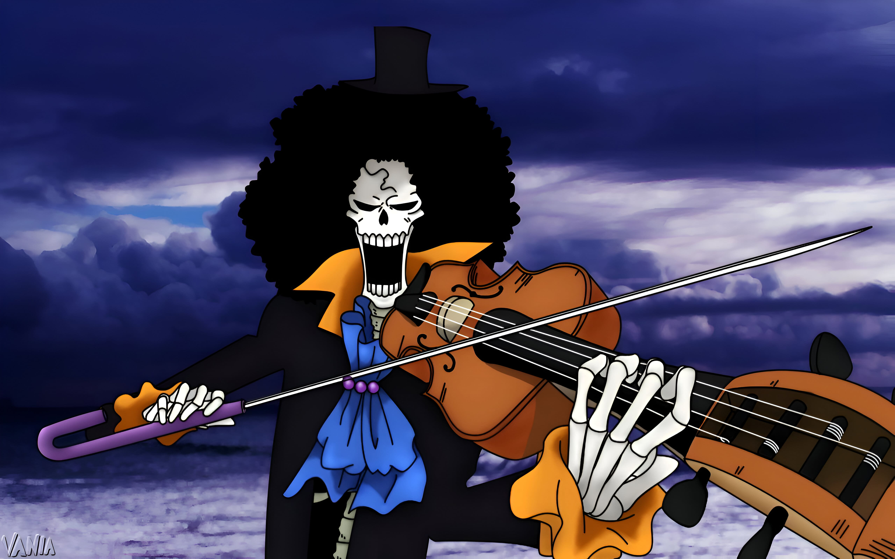
Monkey D. Luffy
Roronoa Zoro
Vinsmoke Sanji
Nami
Usopp
Tony Tony Chopper
Nico Robin
Cyborg Franky
Soulking Brook
Season Jinbei
StrawHat Captain
First Mate
Simp chef
Cat Burglar
Sogeking Sniper
Cotton Candy Lover
Archeologist
Suuper Shipwright
Skeleton Musician
Fishman Helmsman
Warrior of liberation
King of Hell EnmaOO
Kuro Ashi honoo
Sunny Navigator
Brave Warrior of Sea
All mighty doctor
The Demon Child
Hentai Weaponsmith
Underwold chillslayer
First son of the sea
As long as i am alive, there are infinite possibilities!
Hagure Shinzou no Oto
The never ending story of shackles that tie people of their beleifs and boundaries. Imaginations are to be restricted. People slaved to their very ideas.
Joyboy used to weild the power of fairy fruit Hito Hito nomi, model Nika that used to fight as fancied.carried the heartbeat as drums of liberation. As he imagined the nika realm converted his imagination to reality. Breaking the boundaries of perceptions. He used to bring smiles to the faces of the people. Liberate them.